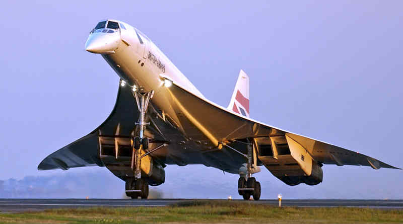

This is a list of my favorite aircraft, both commercial and military!
- Airbus A380
- Blackbird SR71
- Concorde
Airbus A380
 This airplane is famous for being the biggest in the world. It can accommodate up to 850 passengers at once.
This airplane is famous for being the biggest in the world. It can accommodate up to 850 passengers at once.
SR71 Blackbird
 The SR71 Blackbird is a military plane designed for speed and stealth.
The SR71 Blackbird is a military plane designed for speed and stealth.
Its design alllows for speeds up to Mach 3.
Concorde
 I like this plane because of its unique design compared to other planes, and the legacy it carried.
It was capable of reaching Mach 2, flying across the Atlantic ocean in only 2 hours.